Tout d'abord, bienvenue sur mon site web. Je m'appelle Théo Popelin,
Ici, vous retrouverez un ensemble de tutoriels qui vous permettront d'apprendre pas à pas à utiliser les concepts de base du framework Symfony, et, plus tard, d'autres tutoriels plus avancés qui mettront en lumière des modules ou des fonctionnalités intéressantes à utiliser avec le framework.
Pour la culture, Symfony est un framework de PHP développé par sensioLabs (En france ! La french tech dans toute sa splendeur) dont la première version date d'octobre 2005, il fêtera donc d'ailleurs son 15ème anniversaire le 18 octobre.
Symfony est actuellement, aux côtés de Laravel, l'un des frameworks PHP les plus utilisés dans le monde, à tel point que certaines technologies, comme Drupal par exemple, sont elles-mêmes basées sur le framework Symfony.
Vous l'aurez compris, en 15 ans, Symfony a eu le temps d'évoluer tout en restant très performant et c'est pour cela que c'est un framework très intéressant à apprendre car il est très répandu et ne risque pas de disparaître sous le coup d'un effet de mode.
Comme beaucoup d'autres frameworks, Symfony utilise la structure MVC (Modèle - Vue - Controlleur) et utilise des principes de POO (Programmation Orientée Objet) si vous n'êtes pas familiers avec ces concepts, pas de panique ce n'est vraiment pas très compliqué. Cependant, si vous ne connaissez pas du tout le PHP/la POO, il sera obligatoire d'avoir au moins les bases pour pouvoir suivre les prochains tutoriels.
Avant de commencer à coder quoi que ce soit, il faut installer un ensemble de composants essentiels au fonctionnement de symfony.
Au départ, nous allons créer un projet en local sur notre ordinateur. Pour les tests il fonctionnera avec un serveur local et nous verrons plus tard la mise en ligne du projet sur un server web. Nous allons donc avoir besoin d'un serveur local, je vous conseille donc d'installer Wampserver (ou Mampserver si vous êtes sur Mac).
Tout est bon ? Pour en être sur, exéctuez les commandes suivantes pour connaîtres les versions de vos composants :
php -v
composer -v
git -v
Normalement l'invite de commandes devrait vous retourner les versions de vos composants.
Il est maintenenant temps de créer notre premier projet avec symfony, placez vous dans le dossier wamp64/www et exécutez la commande : (Mon projet de test s'appellera Banane)
composer create-project symfony/skeleton Banane
L'installation peut prendre quelques minutes, et votre projet sera créé. Symfony est installé avec son propre serveur embarqué, pour tester notre projet on le lance avec avec la commande : (placez vous dans les répertoire de votre projet avec cd Banane)
symfony server:start
Et vous trouverez par défaut, votre site à l'URL : http://localhost:8000/
Félicitations ! Même si pour l'instant il n'y a rien, nous avons créé notre premier projet avec symfony et son écosystème. Dans le prochain tutoriel, je vous montrerais le fonctionnement de Symfony avec le modèle MVC et nous créerons ensemble notre première page web avec symfony.
Maintenant que notre environnement de travail est complet, nous allons pouvoir commencer à coder à proprement parlé.
Symfony marche sur le principe du MVC (Modèle - Vue - Controlleur). C'est une architecture qui repose sur 3 pilliers, les modèles, les vues, et les controlleurs.
Pour faire court, le controller est le fichier qui s'occupe du traitement de données, le modèle est le fichier qui s'occupe des interactions avec les bases de données, et la vue est le fichier qui permet simplement d'afficher la page avec les données traitées par le controller.
Pour aujourd'hui, nous allons simplement faire un controller de base avec une vue de base, nous n'allons donc pas avoir besoin de modèle. On se positionne donc dans le dossier /Banane/src/Controller (Banane étant le nom de votre projet), et on ajoute un fichier Php avec le nom de notre choix, généralement on nomme les controllers avec le nom des données que le controller va traiter + controller.
Par exemple, le controller que je vais créer pour l'exemple traitera de la provenance de bananes, je vais donc l'appeler BananeController.php.
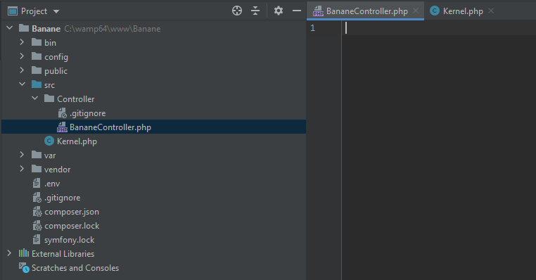
Avant toute chose, nous allons avoir besoin d'installer quelques modules en plus :
Le premier module annotations permet de créer des routes, et le deuxième est le module twig, qui est le moteur de template de symfony (ne vous inquiétez pas, on en parlera plus en profondeur plus tard).
Si vous n'êtes pas du tout familier avec la programmation orientée objet, vous risquez d'avoir un peu de mal a suivre à partir de maintenant, cependant je vais tout de même brièvement expliquer le fonctionnement d'un controller :
Un controller contient une classe PHP, avec un ensemble de méthodes. Ces méthodes sont associées à des routes, ce qui signifie que lorsque l'utilisateur rentre une URL qui correspond à l'une des routes, la méthode associée à cette route prend le relai, effectue le traitement de données qu'elle contient, et renvoie le résultat sur une vue.
Donc, techniquement, les URLs ne pointent pas vers des fichiers html, mais bien vers des méthodes Php qui renvoient ensuite vers des fichiers twig. La première chose à faire dans notre controller est donc de créer la classe du controller et d'y ajouter une première méthode.
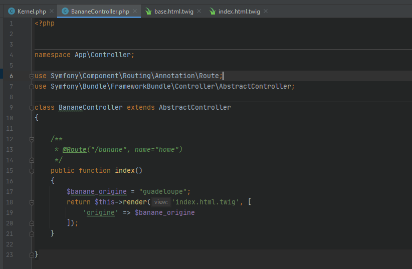
Explication :
Après avoir ajouté les dépendances du fichier (les deux lignes use au début du fichier qui nous permettent d'utiliser les composants Symfony) nous avons créé la méthode index, c'est la méthode par défaut qui se lance avec ce controller. Elle renvoie vers la vue de base, en toute logique sur un site c'est l'équivalent de la page d'accueil. Cette méthode est associée à une route, ici on utilisera la route "/banane", même si la plupart du temps la route de la méthode index est la route par défaut et "/" est utilisée. On la paramètre grâce à l'annotation (non ce n'est pas du commentaire même si ca y ressemble), attention à bien avoir installé le module annotations et à bien avoir importé le fichier correspondant avec la ligne use plus haut.
/**
* @Route("/banane", name="home")
*/
Ensuite on initialise simplement la méthode index, et j'ai ajouté une variable simple ($banane_origine) pour montrer la transmission de données entre controller et vue sur cet exemple.
Ensuite on redirige simplement vers la vue, avec :
Sur ce point c'est juste la méthode render, avec en paramètre la variable que l'on veut transmettre et le nom qu'elle portera, vous apprendrez à utiliser cette méthode au fur et a mesure.
Il ne reste plus qu'a créer la vue et notre première page sera opérationnelle, on va donc aller dans le dossier /Banane/template et créer le fichier twig associé. (Ici on a choisi index.html.twig)
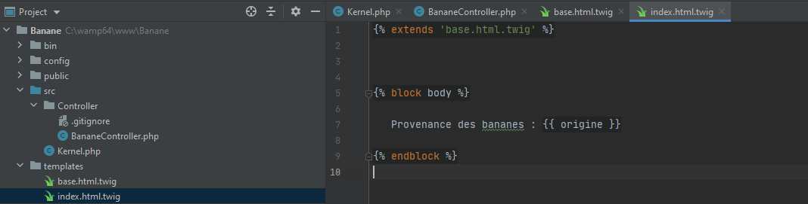
Sur ce fichier, on récupère dans un premier temps le contenu de base.html.twig, qui contient la structure de base d'une page twig qu'on réutilisera presque systématiquement, et on ouvre le bloc body dans lequel on affiche la variable avec {{ origine }}. Twig fonctionne avec un système de blocs créés dans le fichier base.html.twig, et réutilisés dans les autres fichiers twig.
Notre première page symfony devrait maintenant être opérationnelle, et on peut la tester en lancant le serveur embarqué symfony avec la commande symfony server:start.
Ensuite on teste notre route en allant a l'url localhost:8000/banane (Le serveur local de symfony utilise le port 8000 par défaut), et vous devriez recevoir votre page twig avec la variable que l'on a transféré.
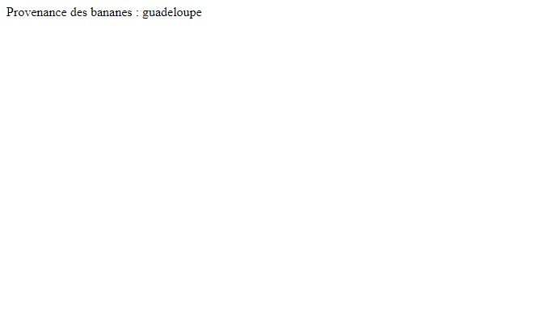
Vous constaterez que si vous changez le contenu texte de la variable dans le controller, le texte sur la page changera sans que vous ne touchiez à la vue. Sur cet exemple ça ne sert pas à grand-chose évidemment, mais plus tard on utilisera des variables issues de formulaires ou de bases de données, ce qui permettra beaucoup de choses.
Félicitations ! Vous avez créé votre premier controller et votre première vue sur Symfony ! La prochaine fois nous aborderons le concept des entités pour commencer à utiliser les bases de données et ainsi compléter la trinité de symfony en utilisant un modèle en plus du controller et de la vue.
Après avoir vu le fonctionnement basique de Symfony, nous allons aujourd'hui nous attaquer aux entités,
ce qui nous permettra d'implémenter l'utilisation de bases de données dans notre projet.
Les bases de données étant essentielles à la création de certains projets, j'aurais donc la lourde tâche aujourd'hui de vous expliquer le fonctionnement des entités.
Ca peut paraître compliqué, mais en vérité c'est très simple. Comme vous le savez déjà, une base de données fonctionne avec un ensemble de tables parfois jointes entre elles.
Et bien sur Symfony, chaque entité représentera une table de la base de données. Par exemple, si je continue mon projet sur les bananes et que je veux stocker des informations sur les différentes variétés de bananes,
je vais créer une entité "banane", il y aura donc une table avec des colonnes contenant les informations relatives à chaque variété de banane (provenance, taille, etc...) et il y aura une entrée dans la table pour chaque variété.
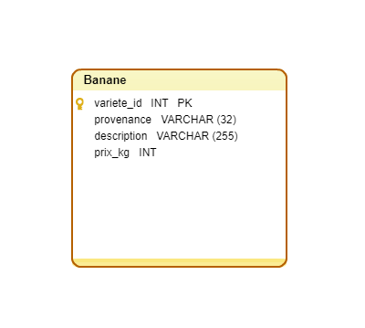
Allons-y, pour créer des entités facilement, nous allons avoir besoin du Maker de Symfony. C'est un module très utile qui permet de créer de façon automatique les composants basiques de Symfony, et comme vous l'avez deviné, il permet de créer des entités. Nous allons aussi avoir besoin du module ORM-pack, qui contient tout ce dont nous avons besoin pour implémenter l'utilisation de bases de données. On exécute donc les commandes suivantes dans l'invite de commande, dans le répertoire du projet Symfony :
Tel picsou gagnant son premier sous fétiche, vous êtes probablement sur le point de créer la première d'une longue lignée d'entités, lancez la commande permettant de créer une entité avec le maker fraîchement installé :
php bin/console make:entity
Si tout est bon, l'invite de commande devrait vous demander le nom que vous voulez donner à votre entité. Si il vous propose du café ou que votre invite de commande passe en mode softwaregore avec du gros rouge qui tache partout -et croyez moi ca risque d'arriver souvent avec Symfony, ce framework est littéralement capricieux-, vous avez probablement oublié d'installer quelque chose.
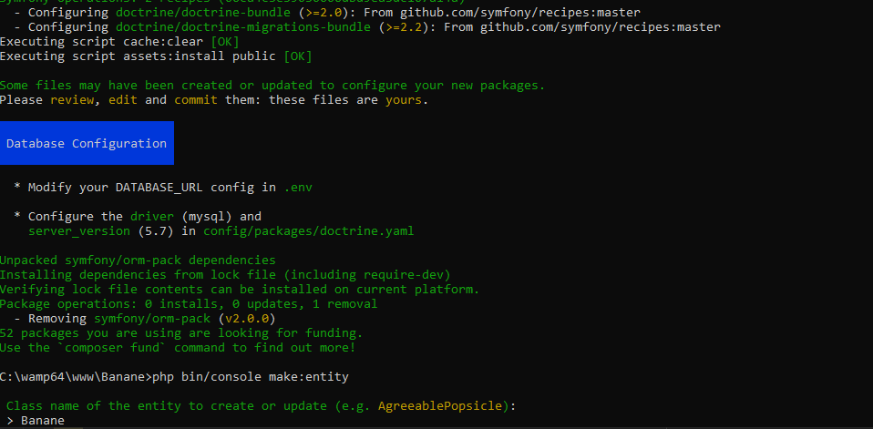
Après avoir entré le nom, on va pouvoir créer des différents champs qu'on va vouloir mettre sur notre table dans la base de données. A chaque fois, Symfony demandera le type du champ (INT, VARCHAR, etc..), si vous n'y connaissez rien en bases de données, je vous conseille de vous renseigner sur les différents champs ici. On va donc créer nos champs les uns après les autres, personnellement je vais suivre le schéma de tout à l'heure mais libre à vous d'adapter à votre projet.
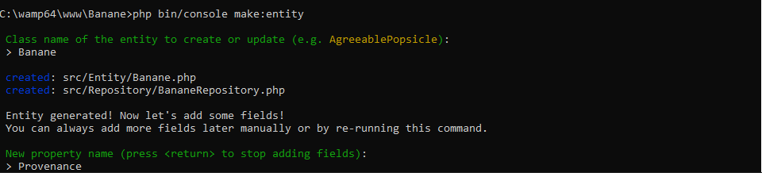
Une fois qu'on a saisi le nom, Symfony demande le type du champ, puis la taille du champ, et enfin si ce champ peut être vide. (la touche entrée permet de saisir automatiquement la valeur par défaut en jaune entre crochets).
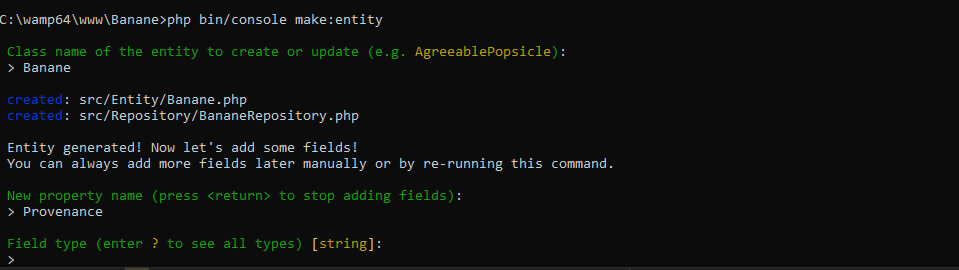
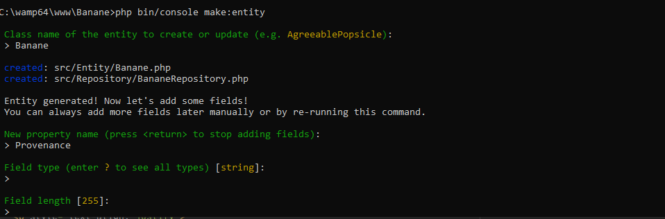
Ensuite on répète cette opération pour chaque table, pour créer une entité correspondant à chaque table dont nous allons avoir besoin. (ici j'ai ajouté les champs Provenance, Description, et Prix). Ah, et évidemment, il faut que le serveur local que nous avons installé dans un précédent tutoriel soit en marche, si il ne l'est pas lancez le, sinon vous n'aurez pas accès à votre base de données.
Nous allons maintenant relier nos entités fraîchement créées à notre base de données, et pour cela nous allons devoir relier symfony à la base de données de notre serveur. Nous allons donc dupliquer le fichier .env qui se trouve à la racine du projet
(le nouveau fichier s'appellera .env.local sur mon projet).
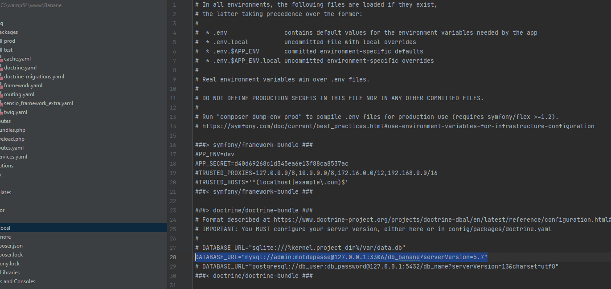
Ensuite on modifie la ligne pour mettre nos entrées en bdd (le nom de la base de données, ainsi que le compte administrateur et son mot de passe que symfony va utiliser pour installer tout ça.), ici ma base de données s'appellera bd_banane, mon compte administrateur admin et son mot de passe... motdepasse. Oui je sais, je n'ai pas cherché bien loin mais bon, pour le moment on est en local donc pas besoin de mettre des choses ultra sécurisées. (Et puis je suis dev moi, pas écrivain, mon boulot c'est de vous faire rêver en utilisant Symfony, pas en créant des mots de passes dingues !).
Pour le moment, la base de données n'existe pas encore sur notre serveur local, (et les tables non plus, du coup), cependant les migrations entre les fichiers Symfony et le schéma de bases de données du serveur sont un sujet assez important, et nous l'aborderons dans le prochain épisode où nous continuerons sur les migrations. A la prochaine !
La dernière fois, nous étions sur le point de réaliser notre première migration pour transférer nos entités fraîchement créées vers la base de données. Aujourd'hui je vais donc vous en dire plus sur le système de migrations Symfony.
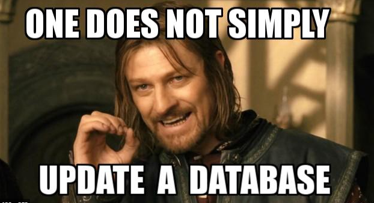
Dans le précédent épisode, nous avions créé un fichier .env.local avec toutes les informations relatives à la connexion bdd. Tout est prêt pour lancer la commande qui va ordonner à Symfony de créer la base :
php bin/console doctrine:database:create
Ensuite on lance les commandes de migration :
php bin/console make:migration
Et ensuite :
php bin/console doctrine:migrations:migrate
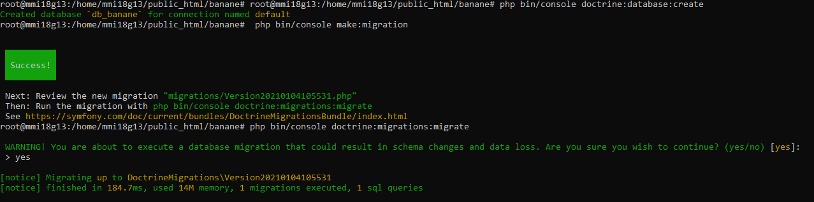
L'invite de commande devrait vous répondre quelque chose de similaire, si vous avez du rouge, c'est probablement un souci d'installation ou de paramétrage !
S'il vous pose une question comme moi concernant les données existantes de la base de données, répondez "yes".
Vous pouvez vérifier dans PhpMyAdmin que vos tables ont bien été créées, (phpmyadmin n'est pas sécurisé et des failles sont connues, je vous déconseille de l'utiliser en version prod de vos projets, cependant ça fait le travail pour la phase dev en local.)
De mon côté tout est carré :
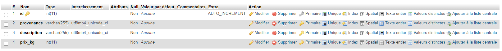
Dans le futur nous utiliserons une seule commande pour actualiser la base de données après avoir modifié / créé des entitées :
php bin/console d:s:u
Diminutif de Doctrine schema update, cette commande évite beaucoup de problèmes liés à la migration et nous fera gagner un temps monstre plus tard. Vous pouvez la tester et l'invite de commande devrait vous renvoyer ceci :
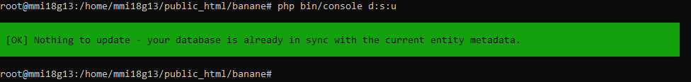
Tout est bon ! dans le prochain épisode, nous commencerons à implémenter des fonctionnalités utilisant les bases de données à notre site de test, et nous aborderons le fonctionnement des relations entre les entités.
C'est reparti pour un nouvel épisode sur Symfony, aujourd'hui au programme : bases de données ! Nous allons implémenter notre première fonctionnalité utilisant les bases de données, avec Symfony.
La première fonctionnalité que je vais créer, pour vous montrer le système de méthodes et la synthaxe Symfony, sera une méthode de base permettant d'afficher un tableau avec les différentes variétés de bananes que nous avions créé. Plutôt simple non ? Vous allez voir, c'est tout aussi simple à réaliser.
Tout d'abord, reprenons notre controller qui nous permettait d'afficher notre première page (du tutoriel 2).
Tout d'abord, supprimons la partie qui affiche l'origine, nous n'allons plus en avoir besoin, et remplaçons tout ça par un bout de code, qui utilise la méthode findAll() qui permet de récupérer tout le contenu d'une table (ou entité) dans la base de données.
$tableau = $bananeRepository->findAll();
N'oubliez pas d'ajouter la ligne use en haut du fichier et la dépendance de la méthode, sinon Symfony ne pourra pas utiliser l'entité.
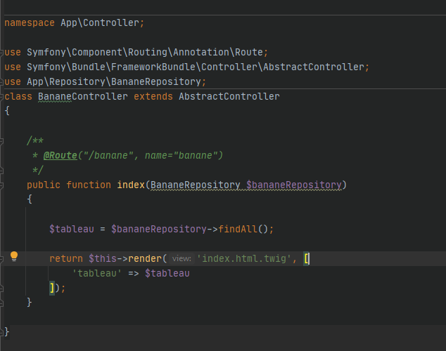
Donc actuellement, notre fichier controller récupère le tableau et l'envoie à notre fichier twig, nous allons donc modifier notre fichier twig pour avoir un tableau qui s'affiche proprement.
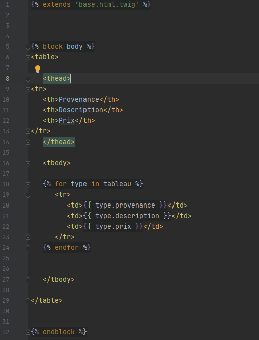
On utilise la synthaxe Twig avec le module for qui est l'équivalent d'un foreach pour sortir et afficher les données d'un tableau. (Comme d'habitude, vous retrouverez le lien vers la documentation en fin de tutoriel).
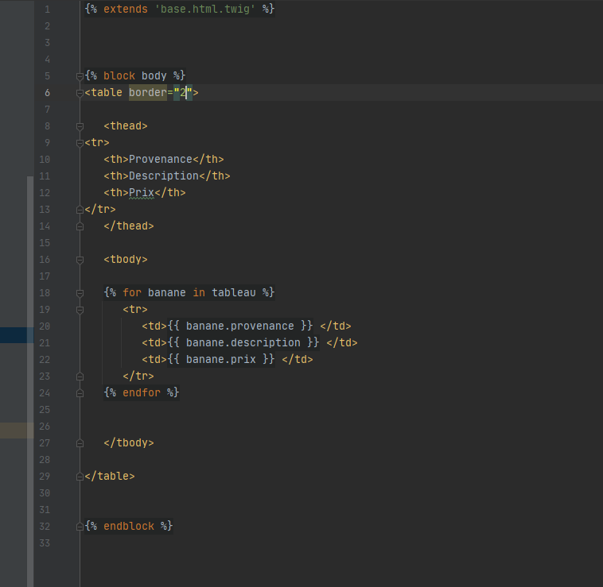
Entre temps j'ai ajouté quelques entrées en base de données pour remplir mon tableau, et lorsque vous lancez votre serveur local vous devriez avoir votre tableau et vos données qui s'affichent simplement sur la page :
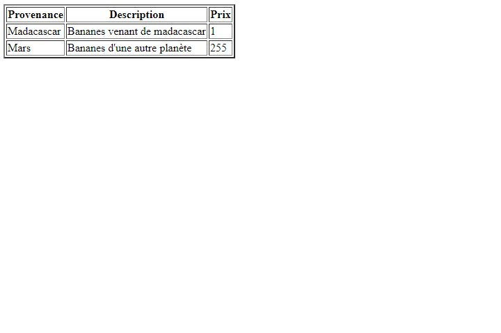
Voila, c'est tout pour aujourd'hui, j'espère que ce tutoriel n'aura pas été trop compliqué à suivre, avec quand même quelques manipulations au niveau du code, je vous conseille encore une fois de consulter la documentation pour vous renseigner sur le fonctionnement des éléments que j'ai utilisé. Dans le prochain tutoriel nous verrons comment utiliser un module pour créer des comptes utilisateurs sur notre site.
Aujourd'hui, nous allons voir comment utiliser un module de création de système de comptes et d'identification, avec le makerbundle, que nous avions déja précédemment utilisé.
Nous allons commencer par dire à Symfony de récupérer le bundle security, qui est essentiel pour ce que nous allons faire aujourd'hui. Comme d'habitude, un petit composer require, vous connaissez déjà la manipulation.
composer require security
Ensuite on lance la création du système avec le maker :
php bin/console make:user
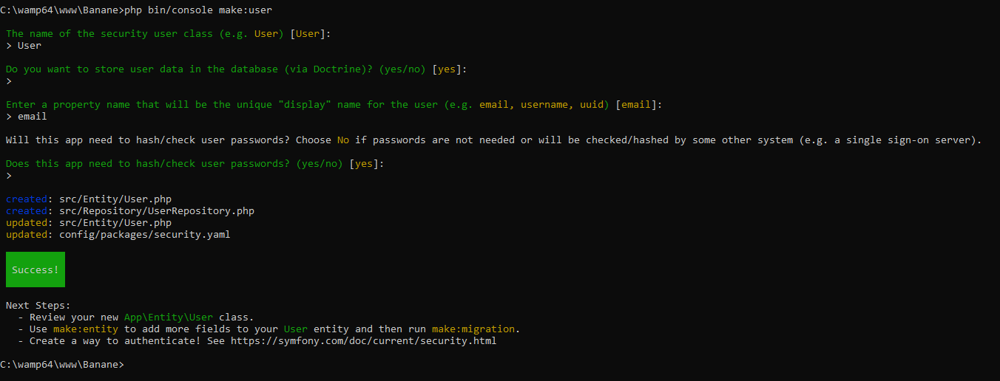
L'invite de commande va ensuite vous poser quelques questions (surtout sur la nomenclature de vos fichiers) pour l'installation, personellement j'ai appelé mon entité user et j'ai choisi d'identifier mes utilisateurs par leur email.
Ensuite on met à jour notre base de données, pour que Symfony créé la table User (Encore une fois PhpMyAdmin n'est pas sécurisé, je vous conseille vivement de le désactiver sur vos projets en ligne.)
php bin/console d:s:u
La table est bien créée :
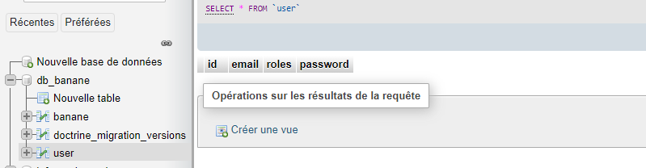
Maintenant que le système d'utilisateur est en place côté base de données, nous allons ajouter un formulaire pour pouvoir nous login sur le site.
Encore une fois nous allons utiliser le maker, on lance la commande :
php bin/console make:auth
Ensuite on répond aux petites questions (quand il n'y a pas de réponse j'ai juste appuyé sur entrée pour avoir la réponse par défaut).
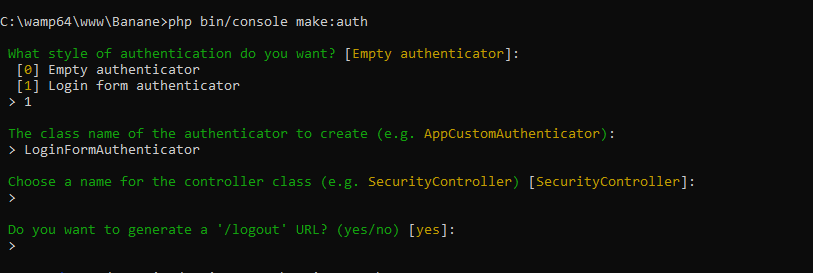
Normalement, à ce moment, si vous lancez votre serveur vous devriez tomber sur un formulaire de login sur l'url /login de votre site. (si vous voulez modifier cette page vous trouverez les fichiers twig associés dans le dossier /templates/security.)
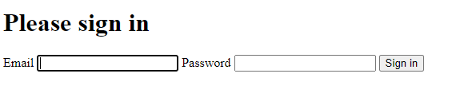
Pour l'instant il est impossible de se login, étant donné qu'il n'y a simplement pas de compte utilisateur sur lequel se login. Nous verrons comment ajouter des utilisateurs dans le prochain tutoriel, pour l'instant nous allons installer un module qui sera très pratique pour savoir si l'on est login ou pas, le profiler.
C'est un outil très pratique qui nous donne diverses informations sur notre site, très pratique pour développer. On l'installe avec la commande :
composer require --dev symfony/profiler-pack
C'est un outil qui se profile sous forme d'une barre en bas de la page, ne vous inquiétez pas elle n'apparaît pas en environnement de prod.
C'est tout pour aujourd'hui, la prochaine fois nous verrons comment ajouter des utilisateurs et nous parlerons des différents niveaux de permissions.
Bonjour, après avoir vu le système de login la dernière fois, nous allons aujourd'hui nous attaquer au système d'inscription. Reprenons notre projet où nous l'avions laissé, nous étions sur le point de créer un utilisateur.
Pour cela, nous allons avoir besoin d'un formulaire d'inscription, nous allons commencer par installer avec composer un module nécessaire à la création de notre formulaire :
composer require form validator
Ensuite on lance une nouvelle fois le maker, cette fois pour créer un formulaire d'inscription :
php bin/console make:registration-form
Encore une fois on répond au petit interrogatoire de l'invite de commandes :
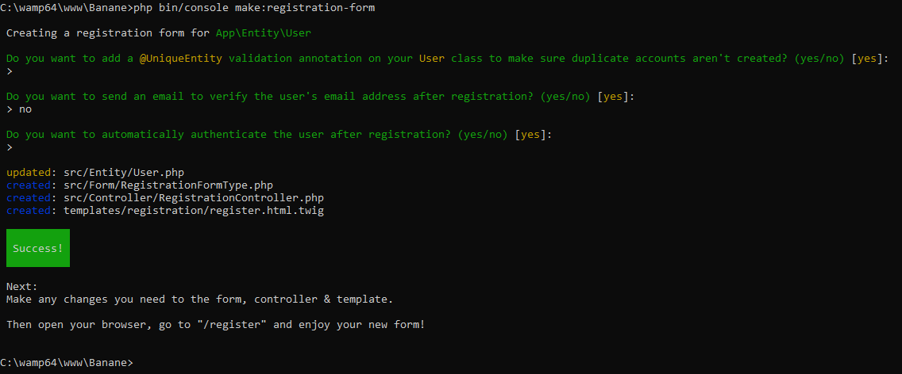
Ensuite on relance le serveur et on vérifie que tout marche bien sur la route /register. Personnellement, j'ai eu une petite erreur et j'ai du ajouter l'url de redirection après la création du compte, dans le fichier LoginFormAuthenticator :
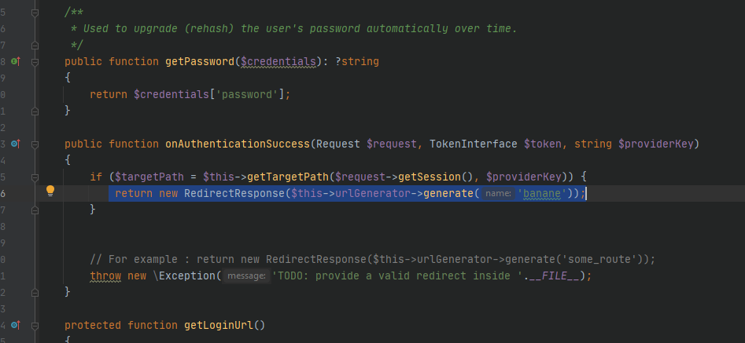
Comme on peut le voir dans la barre du profiler, je suis bien connecté. On peut tester la déconnexion avec l'url /logout également.
Maitenant nous allons parler des permissions. Tout ce système fonctionne avec trois niveaux de permissions, qui sont User, Admin, et SuperAdmin.
En principe, le rôle user est attribué à n'importe quel utilisateur créant un compte, sur un site d'e-commerce ce serait le rôle attribué aux clients.
Le rôle admin permet d'avoir accès à toutes les URL de gestion du site, que ce soit back-office ou autre. Quand au rôle SuperAdmin, il donne absolument toutes les permissions possibles, à ne pas mettre entre toutes les mains.
Vous pouvez spécifier dans un fichier quelles routes ne sont accessibles que par les comptes admin, dans le fichier security.yaml.
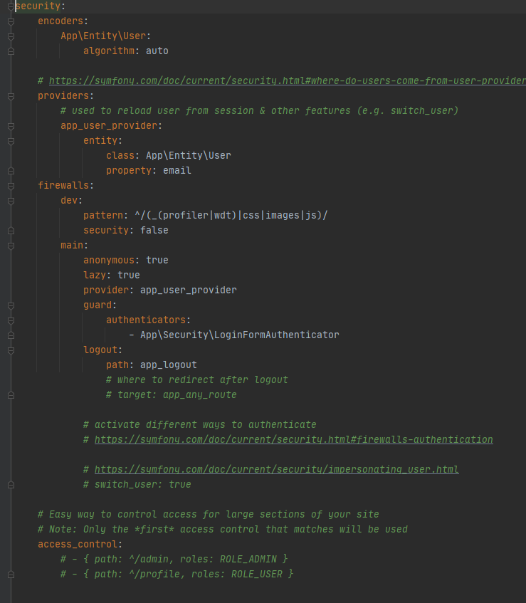
La partie qui nous intéresse pour gérer nos permissions se trouve tout en bas du fichier, ici :
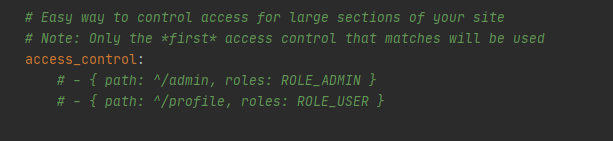
On peut interdire l'accès à certaines routes (ici ce sera la route admin) aux comptes ne disposant pas des permissions admin, comme ceci :
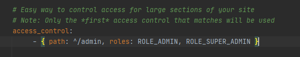
Afin de tester votre site, je vous conseille fortement de créer un utilisateur super admin, ce sera très utile par la suite. La manière la plus rapide est de créer un utilisateur de façon standard avec le formulaire, et d'aller modifier ses rôles à la main dans la base de données.
C'est tout pour aujourd'hui, dans le prochain épisode nous verrons comment créer un back-office avec un module spécialisé, en utilisant le système de permissions pour en restreindre l'accès aux utilisateurs lambda.